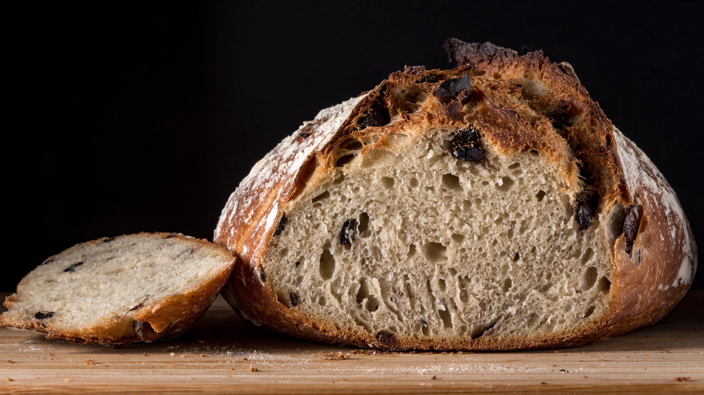

Mackbom Receitas
Receitas deliciosas do Mack
Pão de Fermentação Natural

Imagem do site Pexels.
Ingredientes
- 475g de farinha de trigo
- 5g de sal
- 250ml de água
- 25g de fermento natural
Modo de Preparo
-
Peneire a farinha e adicione a água misturando bem com as mãos até ficar homogênio. Deixe cerca de 10% da água para adicionar depois.
-
Deixe a massa descansando por 30 minutos.
-
Adicione o fermento natural.
-
Deixe a massa descansando por mais 30 minutos.
-
Adicione o sal diluido com o resto da água reservada.
-
Deixe a massa descansando por mais 30 minutos.
-
Molde e asse na temperatura máxima do forno doméstico por 1 hora.